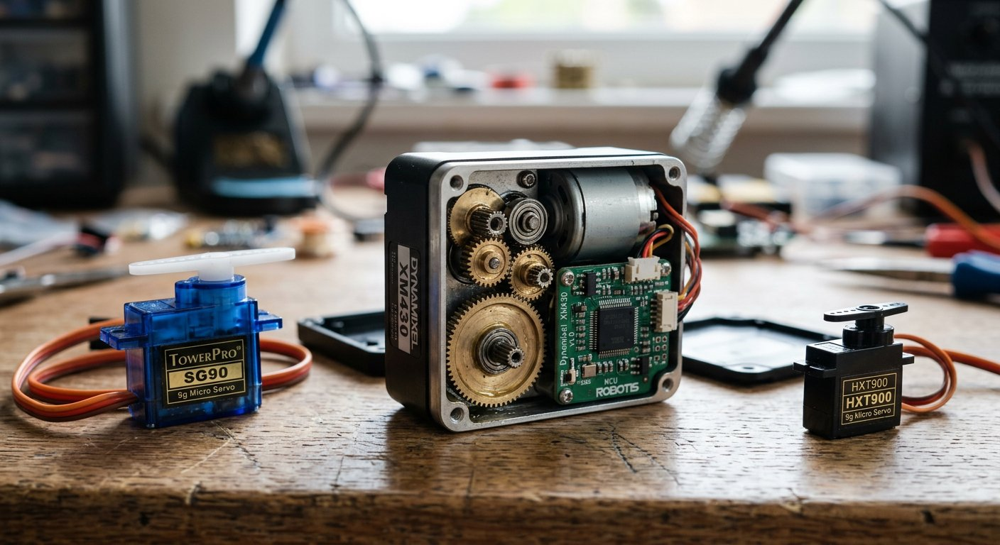

Qué cubre esta guía
Servo estándar vs. servo inteligente
| Aspecto | Estándar | Inteligente |
|---|---|---|
| Comunicación | PWM (un pin por servo) | Bus serie digital (TTL/RS485) |
| Retroalimentación | Ninguna | Posición, corriente, temperatura, voltaje |
| Direccionamiento | Por pin | Por ID en el bus |
| Control | Solo posición | Posición, velocidad y torque |
| Costo | Bajo | Medio-alto |
El servo estándar "obedece pero no responde". El inteligente dialoga: le ordenas, y te informa si llegó, cuánta corriente consume y si está sobrecargado. Esa diferencia es la que habilita el control de lazo cerrado real y la detección de colisiones.
Qué retroalimentación entrega
- Posición real: el ángulo actual, para verificar que llegó al objetivo y detectar bloqueos.
- Corriente consumida: proporcional al torque ejercido; un pico sostenido indica sobrecarga o colisión.
- Temperatura: para proteger el servo de sobrecalentamiento y activar alarmas.
- Voltaje: para detectar caídas de alimentación antes de que causen fallas.
- Alarmas: eventos de sobrecarga, sobrecalentamiento o error de comunicación.
El bus serie y los IDs
Los servos inteligentes se conectan en cadena (daisy-chain) por un bus serie: un solo cable de datos recorre todos los servos, y cada uno tiene un ID único. Los comandos viajan por el bus con un ID de destino, y solo ese servo responde.
Controlador (Arduino/ESP32)
|
+---- Servo ID=1 (base)
|
+---- Servo ID=2 (hombro)
|
+---- Servo ID=3 (codo)
Un solo bus de 3 hilos (TTL): DATOS, VCC, GNDEsto reduce el cableado drásticamente: en lugar de un cable por articulación hasta la placa, todos los servos comparten el mismo bus y se direccionan por ID. La asignación de IDs es la primera tarea al montar el brazo.
Torque, resolución y costo
| Tipo | Torque típico | Resolución angular | Precio aprox. (CLP) |
|---|---|---|---|
| Mini servo estándar (SG90) | ~1.8 kg·cm | ~1° | $1.500 – $3.000 |
| Servo estándar metálico | 10 – 20 kg·cm | ~1° | $5.000 – $15.000 |
| Servo inteligente (Dynamixel AX-12A) | ~16 kg·cm | 0.29° | $40.000 – $80.000 |
| Servo inteligente (Dynamixel MX) | 20 – 45 kg·cm | 0.088° | $60.000 – $150.000 |
Conexión física y alimentación
- Bus TTL (3 hilos): datos, VCC y GND; adecuado para cables cortos y entornos limpios.
- Bus RS485 (4 hilos): mejor inmunidad al ruido y distancias largas; requiere un adaptador RS485 en el controlador.
- Alimentación: los servos inteligentes consumen más que los estándar; usa una fuente acorde al torque y nunca los alimentes desde la placa.
Código con Dynamixel
La librería Dynamixel2Arduino (o la clásica DynamixelSDK) permite enviar comandos de posición y leer el estado. El patrón esencial es:
#include <Dynamixel2Arduino.h>
#define PIN_DIR 2 // pin de direccion del bus (si usa half-duplex)
Dynamixel2Arduino dxl(Serial1, PIN_DIR);
const uint8_t ID_BASE = 1;
void setup() {
dxl.begin(57600); // velocidad del bus
dxl.setPortProtocolVersion(2.0);
dxl.torqueOn(ID_BASE); // habilita el torque del servo 1
dxl.setGoalPosition(ID_BASE, 512); // posicion central (0-1023)
}
void loop() {
int posicion = dxl.getPresentPosition(ID_BASE); // lee posicion real
int corriente = dxl.getPresentCurrent(ID_BASE); // lee corriente
delay(100);
}La retroalimentación se lee con funciones como getPresentPosition() y getPresentCurrent(), que son la base para detectar bloqueos y cerrar el lazo de control, complementando a los encoders externos.
¿Cuándo vale la pena migrar?
- Sigues con servos estándar si: es tu primer brazo, el presupuesto manda y no necesitas retroalimentación.
- Migra a inteligentes si: necesitas precisión de posición, control de torque, detectar colisiones, o el cableado de muchos servos se volvió inmanejable.
La migración no es todo o nada: muchos brazos usan servos inteligentes en la base y el hombro (donde importa el torque y la precisión) y estándar en la muñeca.
Conclusión
Los servos inteligentes transforman un brazo robótico de "motor que apunta" a "articulación que informa": posición real, corriente y temperatura por un solo bus, con control de posición, velocidad y torque. Son más caros, pero para brazos serios la retroalimentación lo justifica. El siguiente paso natural es complementar con encoders de articulación y sensores de fuerza-torque para cerrar el lazo de control completo.
Preguntas frecuentes
¿Qué diferencia hay entre un servo estándar y un servo inteligente?
Un servo estándar recibe una señal PWM con el ángulo objetivo y se posiciona, pero no informa nada sobre su estado real. Un servo inteligente (como los Dynamixel) se comunica por un bus serie digital, acepta comandos de posición, velocidad o torque, y responde con datos: posición real, corriente consumida, temperatura, voltaje y alarmas. Esta retroalimentación permite detectar colisiones, calibrar, y saber si una articulación está sobrecargada o bloqueada, algo imposible con un servo estándar. Además, cada servo inteligente tiene un ID propio, por lo que muchos servos comparten el mismo cable de bus.
¿Qué es un bus serie en servos inteligentes y cómo se conecta?
Los servos inteligentes se conectan en cadena (daisy-chain) por un bus serie, normalmente TTL (3 hilos: datos, VCC y GND) o RS485 (4 hilos, para distancias largas y ambientes con ruido). Cada servo tiene un ID único, y los comandos viajan por el bus dirigidos a ese ID. Esto reduce drásticamente el cableado frente a un servo por pin: en lugar de un cable por articulación hasta el controlador, todos los servos comparten el mismo bus, y solo se cambian los IDs para direccionarlos.
¿Qué es el ID de un servo inteligente?
El ID es un número de identificación único que identifica a cada servo en el bus. Los comandos se envían al bus con un ID de destino, y solo el servo con ese ID responde o ejecuta la orden. Al montar un brazo, asignas un ID a cada articulación (por ejemplo, base=1, hombro=2, codo=3) y el programa se dirige a cada uno por su ID. El ID se configura por software con una herramienta del fabricante o con un comando especial, y es la base de todo el direccionamiento en sistemas multieje.
¿Cuánto torque y resolución necesito en un servo para un brazo?
Depende del peso del brazo y de lo que levante. La base y el hombro, que cargan con todo el peso, necesitan el mayor torque; la muñeca puede usar servos pequeños. En cuanto a resolución, un servo estándar mueve de a un grado o más, mientras que un servo inteligente ofrece resoluciones de 0.29° o mejores, y además control de velocidad y torque. Para un brazo educativo, servos de 15 a 20 kg·cm en la base suelen bastar; para levantar objetos reales, hay que calcular el torque en cada articulación según la masa y la longitud del brazo.
¿Necesito un servo inteligente para mi brazo o puedo seguir con servos estándar?
Para un primer brazo educativo, los servos estándar son suficientes y mucho más baratos. Vale la pena migrar a servos inteligentes cuando necesitas retroalimentación (saber si una articulación está bloqueada o sobrecargada), precisión de posición, control de torque, o cuando el cableado de muchos servos se vuelve inmanejable y el bus serie lo simplifica. La decisión depende del objetivo: si buscas aprender a construir un brazo, empieza con estándar; si buscas un brazo confiable con control de lazo cerrado real, el inteligente lo justifica.
Este artículo es contenido editorial independiente: no contiene ubicaciones patrocinadas ni enlaces de afiliado. Si en futuras actualizaciones se agregan enlaces a proveedores de componentes, serán identificados explícitamente. Los precios y especificaciones son referenciales y varían según el fabricante y el distribuidor. El código y las conexiones son referenciales y deben adaptarse y probarse con tu propio hardware. Si detectas un error en esta guía, por favor avísanos.
Sigue aprendiendo
Cierra el lazo de control con los Encoders de Articulación y los Sensores de Fuerza-Torque para un brazo con precisión industrial.
Fuentes primarias y lecturas recomendadas
Referencias que sustentan los conceptos generales de la guía. Las especificaciones exactas están en la hoja de datos del fabricante de cada servo.
- ROBOTIS e-Manual — Dynamixel AX-12A
- Dynamixel2Arduino — Librería para controlar servos Dynamixel
- ROBOTIS e-Manual — Documentación general Dynamixel
Enlaces revisados: 13 de agosto de 2026.